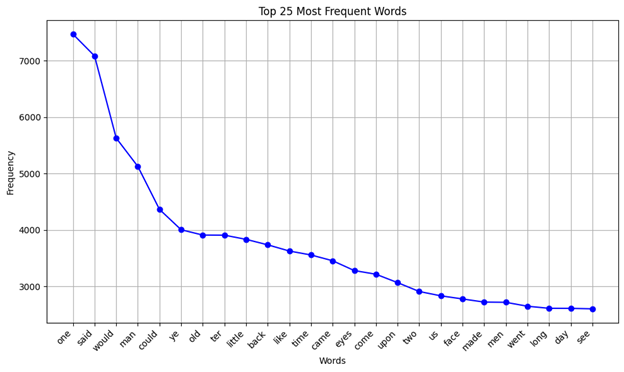
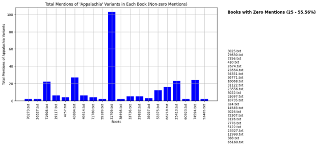
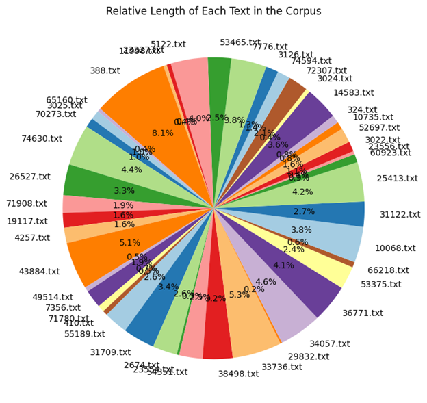
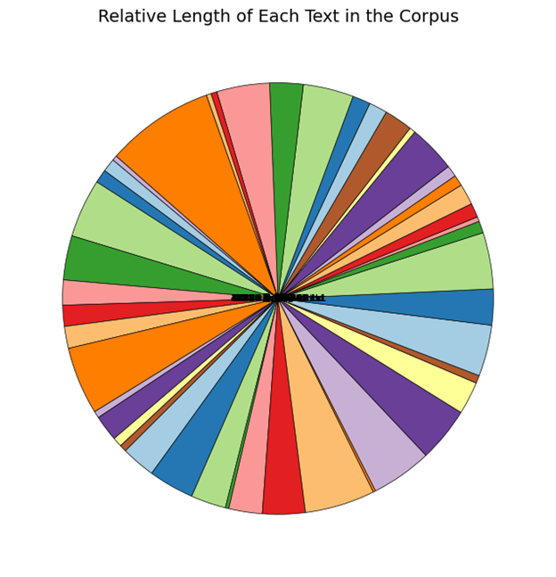
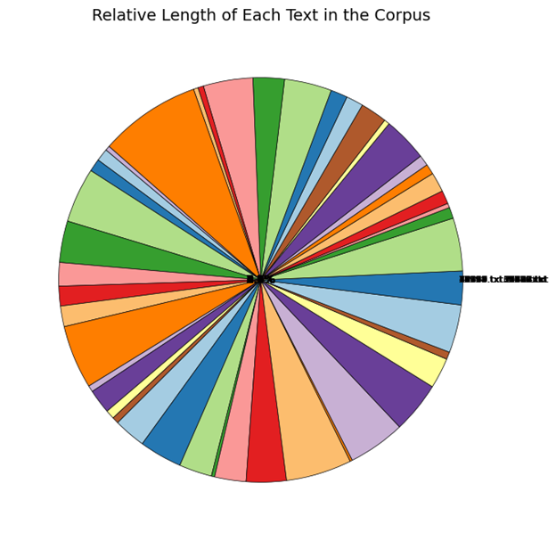

This week, I chose to use the Project Gutenberg search results for "Appalachia," which turned up 45 entries. My mind has been very heavily on home, given Appalachian game studies comprises the entirety of both my intro research paper and mock prospectus for research methods. (I even made an Appalachian game studies reading list and have been tracking mentions and contexts of the region in digital and analog games, up to 50 now. Why am I so excited about this? I swore I'd never do anything Appalachian studies adjacent upon graduating from my master's program.) At first, I wanted to scrape the Game Studies journal for a separate scientometric project I decided to do, but given the site doesn't adopt proper semantic tagging of article elements, I adjusted to the easier variant that matches the demo more closely.
I had a lot of fun with this project. I'm very happy to be working alongside ChatGPT for code-writing. While I have no problem writing my own code, especially as I enjoy successful operation and output, I found the same joys here with a lot less labor. ChatGPT even corrected errors well in all but part of the second graph and totally in the final graph. The first graph is just the demo example:
Here, I had to get it to erase the third most common entry, which was apostrophes for some reason (possibly due to the following). No trouble there! As you can see, there are a few eye dialect elements that conform to older representations of the region as having "well-preserved Elizabethan English thanks to isolation of Scots-Irish immigrants," a proven myth and trope. The one probably worth explaining is "ter," which is as opposed to "to." Next up is the total mentions of "Appalachia" and variants of the word in each text, with zero mention texts separated in a list off to the side:
Clicking through on one example, I noticed for instance that the text came up at all because of metadata on Project Gutenberg not included in the text itself, so this helped me dig a little deeper into that. 20 texts total mention the word(s) at all, and one disproportionately. The graph originally showed all texts, but that looked silly, so I asked ChatGPT to put them off to the side inside. It first gave me another bar graph with zero plotting, which was equally silly. The third iteration gave me what I wanted. It needed spruced up, however, so I asked for a number of zero mention entries next to the list title, as well as the percentage of total texts. It produced an incredible amount of padding between the title and list, unable to be corrected through various iterations such as "reduce the current padding down to 15% of what it currently is."
This final graph is a mess and actually got worse as I went on. The objective was to compare text lengths relative to the length of the entire corpus. Let me give you the best I could get, the first case:
Downright illegible. "How about you change the filename to be next to the percentage, shrink the font size, and move it all closer to the outside or totally outside of the graph?"
Ah, I guess that's...no, it's completely wrong. Please, the outside. I even gave it an image of what it looked like currently, to maybe help it along. What it gave me from there:
It looks like the filenames are now entirely outside, grouped together, while the percentages are dead centered. This is where I gave up on this one.